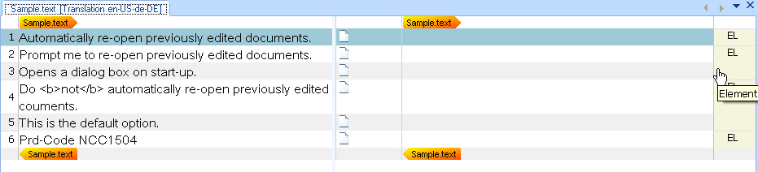
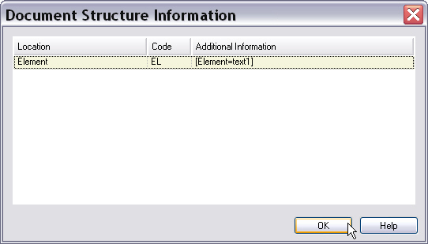

Implementing the File Parser
This section explains how to process a native file and make its content available in Trados Studio.
Add the file parser class
After the file sniffer identifies a valid file, the file parser processes its content. That content then becomes available for interactive translation in the editor of Trados Studio and for batch operations such as pre-translation, file analysis, and word counting.
Files usually contain translatable text and strings that must remain protected, such as HTML tags. Your parser must decide which content to expose for translation and which content to protect. Complex formats can require a more detailed format analysis.
The following example shows the simple text format that the sample file type plug-in processes:
[Version=0]
[Element=text1]
Automatically re-open previously edited documents.
[Element=text2]
Prompt me to re-open previously edited documents. Opens a dialog box on start-up.
[Element=text3]
Do <b>not</b> automatically re-open previously edited documents. This is the default option.
[Element=text4]
Prd-Code NCC1504
For more information about this format and its processing requirements, see the introduction.
Add a class named SimpleTextParser.cs to your project. Because the parser reads text files, add the System.IO namespace. Add System.Drawing if you want to define colors for context information later. Also add Sdl.FileTypeSupport.Framework.NativeApi to work with native formats. Derive your parser class from AbstractNativeFileParser and implement INativeContentCycleAware. If your parser uses custom settings, also implement InitializeSettings from ISettingsAware.
The class must include the following members from INativeContentCycleAware:
- SetFileProperties retrieves information about the input file, such as the file name, path, and encoding.
- StartOfInput runs when the parser starts reading the native input file. You can use it to set the progress indicator to the beginning, for example to 0%.
- EndOfInput runs when the parser reaches the end of the native input file. You can use it to set a progress indicator to 100%.
The following example shows the minimum code required to create a native file parser:
using Sdl.FileTypeSupport.Framework.BilingualApi;
using Sdl.FileTypeSupport.Framework.NativeApi;
namespace Sdk.Snippets.Native
{
public class SimpleTextParser1 : AbstractNativeFileParser, INativeContentCycleAware
{
private IPersistentFileConversionProperties _fileConversionProperties;
public void SetFileProperties(IFileProperties properties)
{
_fileConversionProperties = properties.FileConversionProperties;
}
public void StartOfInput()
{
}
public void EndOfInput()
{
}
}
}
Open the native input file
Add a BeforeParsing method to open the native input file. Retrieve the input file path through OriginalFilePath, which the file conversion properties interface provides. You can also call OnProgress here to set the parsing progress to 0%.
When Trados Studio opens a file, it displays a progress bar for the parsing operation. Call OnProgress to control that progress bar. For example, after the parser reads half the lines in a text file, you can set the parameter to 50.
The following example shows how to use BeforeParsing:
protected override void BeforeParsing()
{
// Set the progress reporter to the beginning.
OnProgress(0);
// Open the native input file for reading.
_reader = new StreamReader(_fileConversionProperties.OriginalFilePath);
}
Note
BeforeParsing and StartOfInput serve different purposes. Trados Studio can merge several files into one master document, including files from different native formats such as DOC and PPT. Use BeforeParsing for logic that runs before the complete parsing process starts, such as writing metadata into the master file header. Use StartOfInput for logic that applies to a specific native file in that merged set. This simple implementation does not cover that scenario. Here, BeforeParsing only sets progress to 0% and creates a StreamReader object.
Parse the input file
Override DuringParsing from AbstractNativeFileParser. This method reads the input file from beginning to end.
protected override bool DuringParsing()
{
// Iterate through all lines in the input file.
while (!_reader.EndOfStream)
{
ProcessLine(_reader.ReadLine());
}
return false;
}
For each line of text, call a separate ProcessLine() helper method to determine whether the line contains translatable text.
private void ProcessLine(string sLine)
{
if (sLine.StartsWith("[") && sLine.EndsWith("]"))
{
WriteStructureTag(sLine);
WriteContext(sLine);
}
else
{
WriteText(sLine);
}
}
The ProcessLine() helper works as follows: if a line starts with an opening bracket and ends with a closing bracket, call separate helper methods named WriteStructureTag() and WriteContext().
Use WriteStructureTag() to write non-translatable information into a structure tag. The non-translatable text, such as the strings enclosed in brackets, remains in the bilingual SDLXliff file, but the editor does not expose it to the user. Include this information in the SDLXliff file so that the generator can write it back to the native target file later.
Because users cannot see structure tag content in the editor of Trados Studio, consider adding context information. The editor shows this information in the document structure column on the right side. Your file type plug-in can display a short descriptive code. Users can point to that code or double-click it to view more detail. The WriteContext() helper method handles this task.
Output translatable text
If a line does not start and end with a bracket, treat it as translatable text and expose it for translation. Use the WriteText() helper method for this step.
The WriteText() helper uses CreateTextProperties on the properties factory to create an ITextProperties object that contains the localizable text. It then outputs that text through Output.Text().
// Output translatable text.
private void WriteText(string textContent)
{
ITextProperties textProperties = PropertiesFactory.CreateTextProperties(textContent);
Output.Text(textProperties);
}
Output structure tags
In the same way, WriteStructureTag() uses CreateStructureTagProperties on the properties factory to output non-translatable lines as structure tags in the intermediate SDLXliff file. Pass the tag content to CreateStructureTagProperties() and then send the result to the API through Output.StructureTag().
// Output non-translatable text as a structure tag.
private void WriteStructureTag(string tagContent)
{
IStructureTagProperties structureTagProperties = PropertiesFactory.CreateStructureTagProperties(tagContent);
structureTagProperties.DisplayText = tagContent;
Output.StructureTag(structureTagProperties);
}
Output context information
Context information can help translators work more effectively. For that reason, it is useful, though not required, to output context information from your file type plug-in. The following example shows the WriteContext() helper method:
// Output context information for the translator.
private void WriteContext(string contextContent)
{
IContextProperties contextProperties = PropertiesFactory.CreateContextProperties();
IContextInfo contextInfo = PropertiesFactory.CreateContextInfo(contextContent);
contextInfo.DisplayCode = "EL";
contextInfo.DisplayName = "Element";
contextInfo.Description = contextContent;
contextInfo.DisplayColor = Color.Beige;
contextProperties.Contexts.Add(contextInfo);
Output.ChangeContext(contextProperties);
}
Use CreateContextInfo on the properties factory to generate a context information object, and then output the context properties. These parameters control what the editor displays in the document structure column.
In the editor, users first see the short form, which is the display code. In this example, the display code is EL. When users point to the display code, the editor shows the display name, Element, in a tooltip. When users double-click the display code, they can open a dialog box that shows the full string, for example [Element=text3]. You can also assign a background color to each context element. Different colors make it easier to distinguish between contexts such as headings, paragraphs, and footnotes.
After you implement these methods and build the solution, you can open a sample file in Trados Studio. The translation editor then looks like this:

At this stage, the inline formatting tags still appear as normal translatable text. The next chapter, Processing Inline Formatting, explains how to mark up these elements as inline tags and apply the correct formatting to the enclosed strings.
The File Type Support Framework also handles segmentation automatically. As a result, individual sentences appear in separate editor cells, and you do not need to implement segmentation logic yourself.
The following example shows what users see after they double-click a context display code.

Close and release the input file
After the parser finishes reading the file, override AfterParsing. In this method, close the original file and release it from memory. You can also call OnProgress to set progress to 100%.
protected override void AfterParsing()
{
// Close the original file.
_reader.Close();
_reader.Dispose();
_reader = null;
// Set the progress report to 100%.
OnProgress(100);
}
Add the component reference to the File Type Component Builder
Reference the file parser component in the File Type Component Builder by adding the following method:
/// <summary>
/// Gets the file extractor for this component.
/// </summary>
/// <param name="name">Not used here.</param>
/// <returns>A FileExtractor that contains a Simple Text Parser.</returns>
public virtual IFileExtractor BuildFileExtractor(string name)
{
var parser = new SimpleTextParser();
parser.LockPrdCodes = true;
var extractor = this.FileTypeManager.BuildFileExtractor(this.FileTypeManager.BuildNativeExtractor(parser), this);
extractor.AddFileTweaker(new SimpleFilePreTweaker { RequireValidEncoding = false });
return extractor;
}
See also
- Processing Inline Formatting
- Enhancing the File Parser to Process the Settings
- Processing Placeholder Tags
- Handling Tags During Segmentation
- Locking Specific Strings
- Using context information
Note
This content may be out-of-date. To check the latest information on this topic, inspect the libraries using the Visual Studio Object Browser.